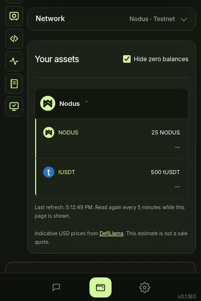
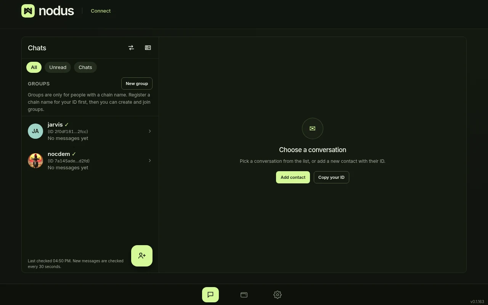
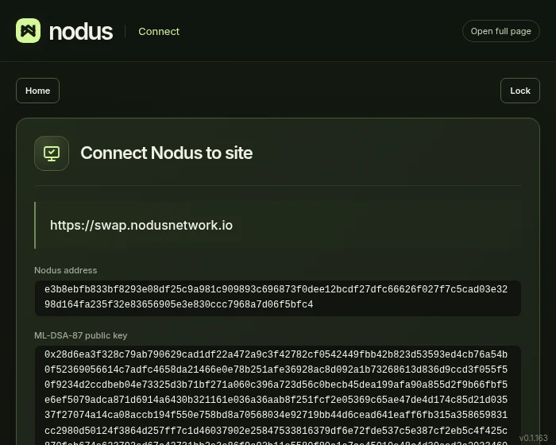

Open it.
Click the Nodus Connect icon in the toolbar.
A browser wallet for your own recovery phrase. It holds coins on the Nodus testnet and on Ethereum, BNB Smart Chain, Solana and TRON, connects to websites only after you approve, and includes Nodus Connect messages.
One 24-word recovery phrase for all networks. Create a new wallet or restore an existing one.
Send and receive on Ethereum and BNB Smart Chain (the native coin and listed tokens), Solana and TRON.
Nodus testnet: send and receive NODUS, staking (Earn), shared vaults that need several approvals, and smart contracts.
Further networks are listed in the wallet; for each one the wallet states whether it can send, receive or only show a balance.
Website connections: a website can ask for your address, a message signature or a transaction. You approve each one in the wallet’s own window, and you can disconnect a website at any time.
Nodus Connect messages: contacts, chats, groups, reactions, a profile name and picture, and payments in chat.
Notifications for transactions you send and for funds you receive.
Address book, transaction history (not on BNB Smart Chain), and an automatic lock after the idle time you choose.
Choose the server for Ethereum and BNB Smart Chain, or enter your own HTTPS server for them; Ethereum also offers a private-submission server.
The extension and the web app at connect.nodusnetwork.io share the name Nodus Connect. The Nodus network in this release is a test network. Needs Chrome 123 or later.



Add Nodus Connect from the Chrome Web Store, then open it from the browser toolbar.
Click the Nodus Connect icon in the toolbar.
Read the data notice and choose “Agree and continue”.
Create a wallet and write down your 24 words, or restore your words, and set a password.
Use the bar at the bottom to switch between Connect, Wallet and Settings.
Your recovery phrase and password never leave this device; the phrase is stored encrypted with your password. To show balances and send transactions, the wallet contacts each network’s public server with your public address; prices are read from DefiLlama with asset names only. Nodus balances, transactions and Nodus Connect messages go through the Nodus network. No analytics and no tracking.
Runs on the http and https pages you open and lets them find the wallet and send it requests. The wallet does not read page content; a website gets your address or a signature only after you approve.
Transaction and incoming-funds notices only.
The wallet reaches the public servers of the networks it supports, including a server you enter for Ethereum or BNB Smart Chain, and the Nodus network’s nodes over secure WebSocket.
Keeps on this device only your password-encrypted wallet, the encrypted history, address book and list of approved websites, and your settings. The unlimited storage permission lets a long message or transaction history keep being saved.
Lock the wallet after the idle time you choose and, while it is unlocked, check once a minute for funds arriving at your own addresses.